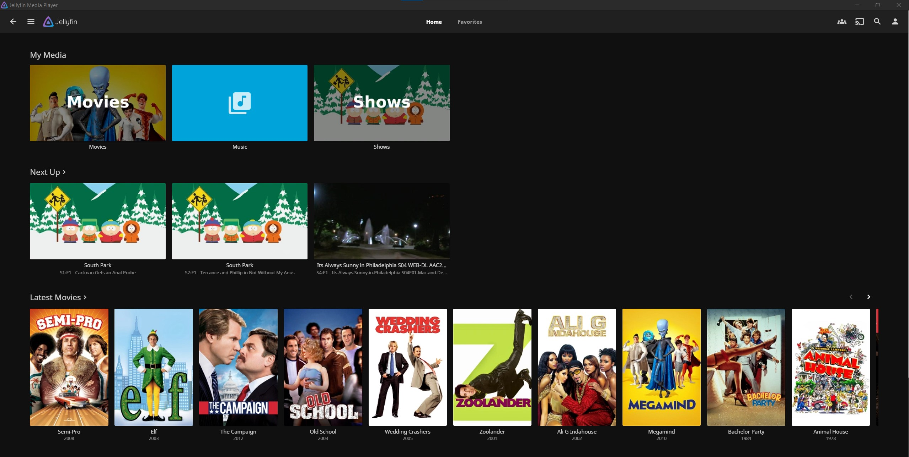
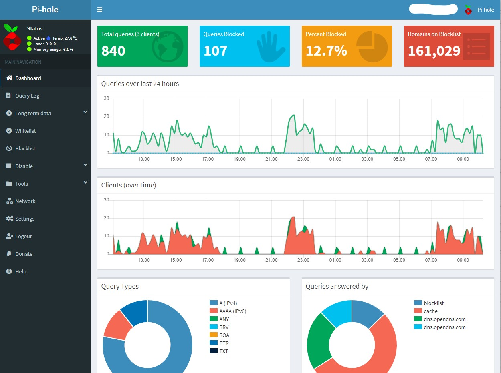

Cole Cerull's Page for Universal Design
Linux
Home-Lab Server

A topic I have always had interest in is network systems and how they work but never had a lot of experience with them. I have used a few raspberry pi's to perform some basic tasks but was limited by their processing power for larger tasks.
I spent a fair amount of time researching and looking around on Facebook marketplace for suitible computers to use for this task. After awhile I stumbled upon a Lenovo ThinkServer TS140. While the unit was about 10 years old, it had the processing power and features I needed for my tasks. I purchased the unit for a very good price. It has an Xeon processor, a basic graphics card was added along with an upgraded power supply for more efficiency. The unit came without any drives so I purchased a WD Red drive that is large enough to hold all the data I planed to store.
Since the drive came with no drive, it had no operating system installed. I decided to go with the Linux distrobution Debian for an OS. The setup was quite smooth and only required me creating an image on a flash drive to get it going! I planned on doing the initial setup headless, however there were some issues with Debian allowing SSH from the start. Therefore I connected a monitor and keyboard for the first setup until I was able to enable SSH. After that I have done all my access remotley through SSH.
Once I configured everything the first project I set out on was creating a media server. For this I decided to use Jellyfin which is an open source software which facilitates managing media and allowing it to be acces on any device on the same netowrk. The setup was very easy, I used curl to download and install Jellyfin, then I was able to access the dashboard from a browser where I did the setup and file managment. Now I am able to seamlessly stream media to my Roku TV, phone, computer and gaming consoles. One of the nicest parts of jellyfin is that once media is added, the application will collect metadata for each film so the experience of using it is very similar to any other streaming service.
The next project I did was setting up a DNS sinkhole. This allows me to route all traffic through it, where it performs network-wide ad blocking. To set this up I used an application called pi-hole which I installed onto a docker container. I have run into a few issues however, my internet service proveider (Xfinity) provides a router/modem combination unit. The unit they provide, while very nice and easy to operate, does not allow for me to use custom DNS settings. I am able to change the DNS settings device by device but to enable ad blocking on all devices without the need to change individual settings I will need to purchase my own router and operate the Xfinity devide in bridge mode or purchase my own modem as well. Currently I have been using the pi-hole on my phone and desktop with good success.
I have more plans for additions to my server such as setting up a NAS(network attatched storage), and building a Minecraft server just for fun. I will continue to update this page as I add more to it!